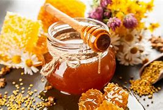
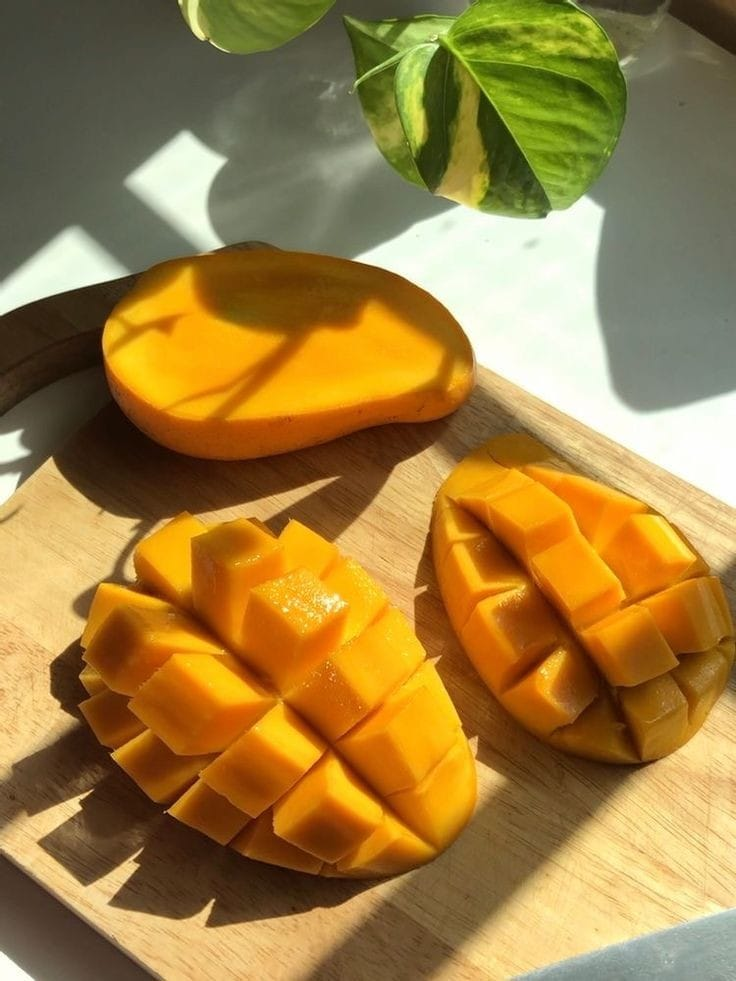
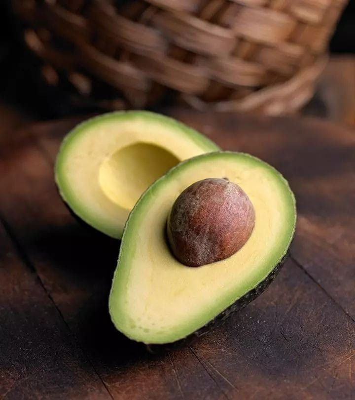
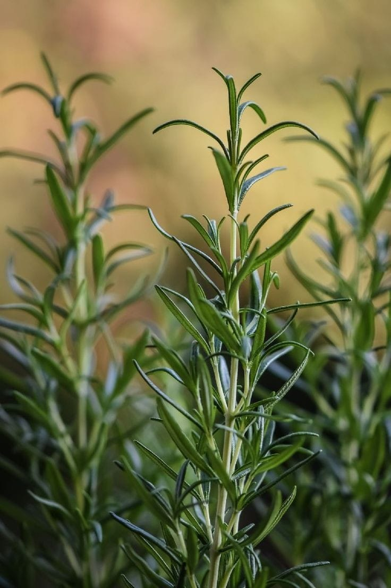

- Nosotros
- procedimiento
- Productos
- Principal
-

- ZERO DOMMAGE
¿Quíeres saber el Por qué de cada componente?
Acá te lo explicaremos de una forma un poco mas detallada.
Gracias a la cera de abejas que nos aportan una fijacion intensa y sin dañar nuestro cabello. Tendremos un aspecto visual muy hermoso y favorecedor a la hora del peinado, sin olvidar que de igual manera ayuda con nuestra hidratación de nuestro cabello.
La manteca de mango será un aliado si quieres hablar de recuperar esos cabellitos secos y debiles. el mango es fiel y amigable con nuestro cuero cabelludo evitando la caspa o posibles alergias.
Es conocido como un aceite que ayuda al crecimiento de unestro cabello, pero... ¿sabias que tambien es un fiel hidratante? al ser un aceite natural obtenemos todos los beneficios como la hidratación profunda y su purificasión natural que ayuda a la caspa o la resequeda se vayan por completo de nuestro cuero cabelludo

El aceite de aguacate nos ayuda como protector del sol a nuestro cabello, al igual que nuestra cara; el cabello esta constantemente en riesgo por los rayos del sol. el aguacate nos ayuda a que esto no sea más un problema y ayuda aquellos pelitos con porosidad alta vuelvan a su lugar.
El romero además de sus multiples beneficios tambien tienen un olor muy amigable, es por eso que nuestra barra obtiene un olor para que asi sea más facil llevarlo a todo lado sin importar quien este a nuestro alrededor
